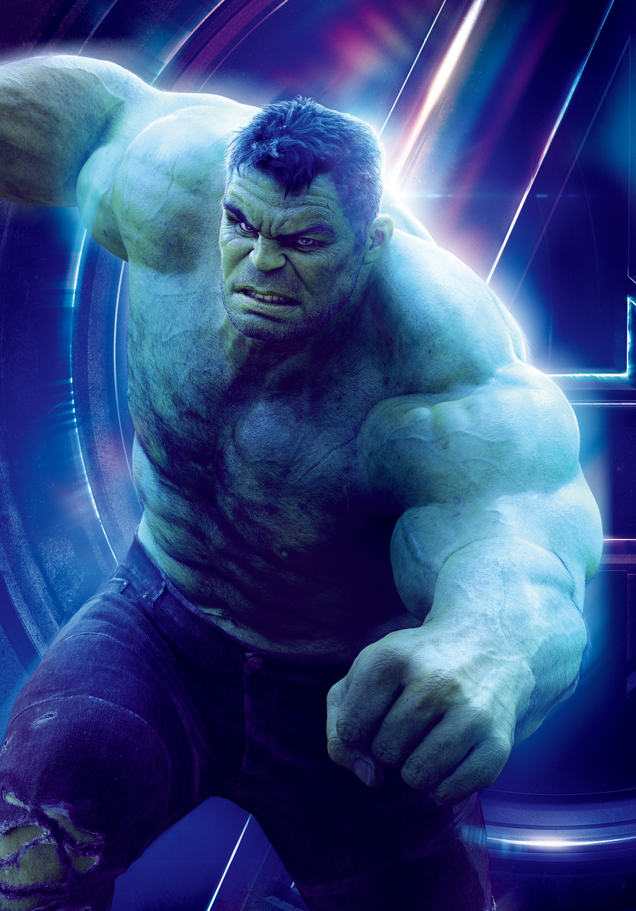
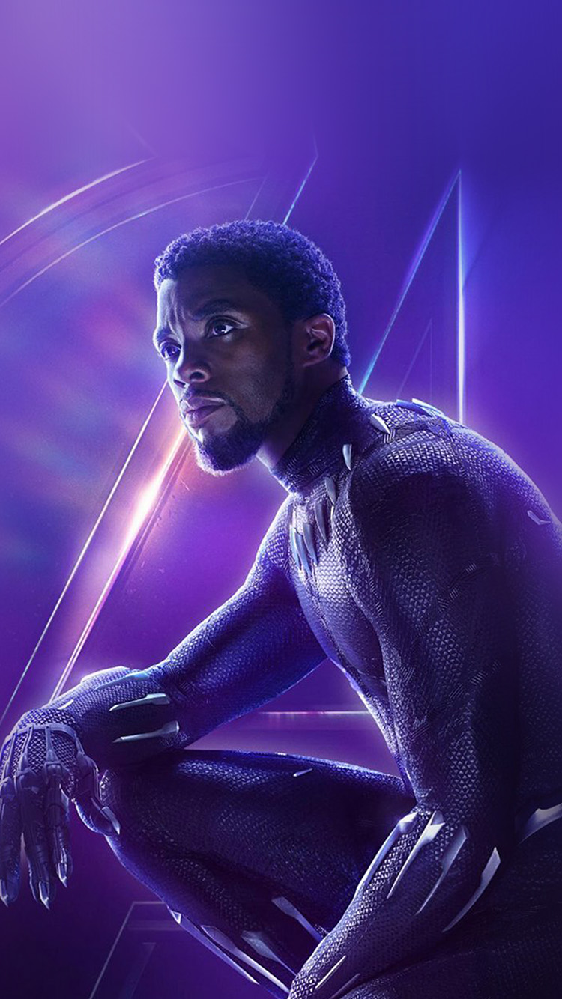
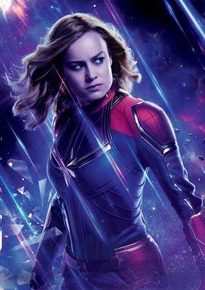

Homem de Ferro
Homem de Ferro (Iron Man, em inglês) é um personagem fictício dos quadrinhos publicados pela Marvel Comics. Sua identidade verdadeira é a do empresário e bilionário Tony Stark, que usa armaduras de alta tecnologia no combate ao crime. Foi criado em 1963 pelo escritor Stan Lee, o roteirista Larry Lieber, e os desenhistas Jack Kirby e Don Heck. O objetivo de seu criador, Stan Lee, era aceitar o desafio de fazer um personagem ser odiado e depois amado pelo público, assim, criou um dos super heróis mais marcantes de todos os tempos.
Seu traje possui vários aspectos tecnológicos. A armadura é a testemunha da genialidade de seu criador Tony Stark. A parte interior é revestida de titânio com ouro, sendo enriquecida por um campo magnético. Geralmente, ela é guardada dentro da sala executiva de Stark, num compartimento secreto. Possui diversos equipamentos como um sofisticado sistema de navegação, o Jarvis (é claro), sensores e scaners diversos, sistemas de projeção de imagens holográficos, sonar, flaps, lasers, pequenos projeteis (teleguiados ou não), emissores de pulso eletromagnéticos, disruptor sônico, entre muitos outros apetrechos. A maioria dessas habilidades não estavam presentes no traje original do Homem de Ferro quando apareceu pela primeira vez em Março de 1963 na Tales of Suspense #39.
A armadura era baseada na então recente tecnologia dos transístores, que as vezes eram chamados de "transístores miniaturizados".[4] A principal arma era chamada de "raio repulsor", expelido das palmas das mãos da armadura. Logo depois das primeiras histórias, Stan Lee ouviu opinião de alguns empregados da Marvel e resolveu tornar a aparência do herói mais agradável: mudou a cor da armadura para dourado, passando o Homem de Ferro a ser chamado durante algum tempo de O Vingador Dourado. As constantes inovações tecnológicas levaram o traje a ser sempre modificado em sua aparência. Dos transistores iniciais, ele agora se baseia em chips e nanotecnologia. várias versões da armadura foram criadas para situações específicas, como uma versão espacial, e outras para fins de espionagem e atuações submarinas sob grande pressão. Houve duas bem específicas: uma gigante, usada para deter o Hulk; e outra confeccionada especificamente para funcionar com a energia de uma pedra Asgardiana.

Capitão América
Capitão América é um super-herói de histórias em quadrinhos americanos publicado pela Marvel Comics. Criado por Joe Simon e Jack Kirby, o primeiro personagem apareceu em Captain America Comics # 1 (março de 1941) da Timely Comics, antecessora da Marvel Comics. Capitão América foi concebido como um super-herói patriótico que lutou contra as potências do Eixo na Segunda Guerra Mundial[1] e foi personagem mais popular da Timely Comics durante o período da guerra. A popularidade dos super-heróis diminuiu após a guerra e os quadrinhos Capitão América foram interrompidos em 1950,[2] com uma volta de curta duração em 1953. Em 1964, o personagem foi reintroduzido como participante do Universo Marvel
Para muitos não-leitores, e até personagens dos quadrinhos, o Capitão não tem poderes. Na verdade, graças ao soro que recebeu durante o experimento para a criação de "supersoldados" ele obteve um poder de cura, e um corpo mais elevado e desenvolvido do que qualquer lutador e atleta esportivo do planeta. Em comparação, se o limite físico de um homem comum no ápice de sua forma física fosse 10, o do Capitão América, seria de 30. Com o soro do supersoldado correndo em suas veias, o Capitão também possui outros atributos físicos, como resistência, agilidade e velocidade sobre-humanas pois seu esqueleto é muito mais denso do que de um humano normal. Steve também é considerado um líder eficaz, liderou vários grupos de heróis durante sua carreira heróica, por ser um ex-militar, ele é um grande estrategista perito em táticas de guerrilha e algumas armas de fogo. Rogers também possui uma grande inteligência, o que ajuda muito em seus planos de combate. Também é treinado em todas as formas de artes marciais, sendo um mestre em combate corpo-a-corpo.
A única arma do Capitão América é o escudo, usado para defesa e também ataque, quando então funciona como um bumerangue. Dr. Myron MacLain , baseado na lenda de Hércules que possui uma maça de adamantina que, segundo a lenda, é indestrutível, ele tentou criar uma liga indestrutível para os americanos durante a Segunda Guerra Mundial. Em algum momento ele adormeceu na bancada de seu laboratório, e os metais que ele estava trabalhando de algum modo se uniram, uma combinação de vibranium e adamantium criou um material mais forte do que qualquer um já conhecido o protoadamantium. Houve tentativas de se repetir a fórmula para criar o material, mas não houve sucesso, e usaram a única liga que possuíam para criar o escudo do Capitão América.

Thor
Thor é um personagem fictício que aparece nas histórias em quadrinhos publicadas pela Marvel Comics. Baseado no deus Thor da Mitologia Nórdica, ele foi criado por Stan Lee, Larry Lieber e Jack Kirby. Estreando na Era de Prata dos quadrinhos, o personagem apareceu pela primeira vez em Journey into Mystery #83 (agosto de 1962). Ele é um membro fundador da equipe de heróis Vingadores.
Thor é virtualmente um deus de outra realidade, possuindo vastos poderes. Desta maneira, possui uma enorme força e velocidade sobre-humanas. Também é capaz de controlar os elementos da tempestade, gerando trovões, relâmpagos, raios, furacões e geadas. Além de possuir armas poderosas, como o martelo mágico Mjölnir.
Odin criou para Thor a mais fiel e poderosa arma possível, o martelo Mjolnir. Feito de um minério místico especial chamado Uru e forjado no coração de uma estrela pelos Deuses ferreiros de Asgard, Brokk e Eitri, os lendários ferreiros. Essa fantástica arma, quando arremessada, sempre retorna à mão do possuidor. O Martelo mágico também é capaz de criar portais entre dimensões, desferir golpes poderosos, além absorver qualquer tipo de energia e relançá-la ampliada. Thor, ao girar o martelo místico a incríveis velocidades, cria um escudo intransponível. Como se não bastasse, o martelo ainda é imbuído com diversos encantamentos misteriosos. De acordo com a magia colocada no martelo, somente aquele que fosse digno poderia erguê-lo, um subterfúgio criado por Odin, temendo que arma tão poderosa pudesse cair em mãos errôneas e perigosas.
O Encantamento do Digno: O encantamento do martelo faz com que somente alguém digno o suficiente possa erguê-lo, fazendo com que os inimigos de Thor, ou qualquer um com objetivos não nobres nunca consigam se apossar da arma encantada, pois não são dignos de usá-la. Além disso, não basta ter apenas a intenção heróica ou mesmo agir como tal. O coração deve ser tão puro ou mais que o do próprio Thor. Um nobre guerreiro alienígena chamado Bill Raio Beta, conseguiu tal proeza e, após duelar com Thor, recebeu de Odin um outro martelo chamado Rompedor de Tormentas. Um segundo martelo seria dado a um humano chamado Eric Masterson que se tornaria o super-herói Trovejante (Thunderstrike, no original), uma versão mais fraca e humanizada do Poderoso Thor. Também já foi capaz de erguer o martelo o Capitão América; e, obviamente, o próprio Odin.

Hulk
O Hulk, por vezes referido como O Incrível Hulk (The Incredible Hulk, no original em inglês) é um personagem de quadrinhos/banda desenhada do gênero super-herói, propriedade da Marvel Comics, editora pela qual as histórias do personagem são publicados desde sua criação, nos anos 1960. Concebido pelo roteirista Stan Lee (1922-2018) e pelo desenhista Jack Kirby (1917-1994), teve sua primeira aparição junto ao público original dos Estados Unidos na revista The Incredible Hulk n°1, lançada no mercado americano pela Marvel Comics em maio de 1962, um título solo do personagem, garantindo-lhe o acesso ao que mais tarde seria popularmente conhecido como Universo Marvel dos quadrinhos/banda desenhada. A partir de então, o Hulk tem aparecido, protagonizando ou não, diversas histórias da editora, se tornando um dos mais visualmente reconhecíveis da mesma, tendo o universo entorno do personagem se expandido continuadamente ao longo das últimas décadas.
A força do Hulk não "possui um limite estabelecido", atingindo níveis inacreditáveis. Com ela, pode pular enormes distâncias com um único impulso de seus membros, e usar as mãos para fazer uma palmada sônica — um bater de palmas usado por Hulk, causando fortes ondas sonoras e ventos, e pode erguer um peso ilimitado de força. Sua força cresce após o aumento de adrenalina no seu sistema circulatório. Nos quadrinhos, ele foi capaz de destruir um asteroide com duas vezes o tamanho da Terra, um de seus feitos mais famosos foi em Guerras Secretas onde ele consegue segurar uma montanha de 150 bilhões de toneladas jogada sobre ele pelo Homem Molecular, ele também conseguiu juntar as placas tectônicas do Planeta Sakaar sob altas temperaturas na saga Planeta Hulk. Outro de seus grandes feitos de força acontece quando uma esfera de Matéria e antimatéria estavam para se fundir, e com isso ameaçando a destruição da Terra, o Hulk com sua força impede-as de se unirem, segundo o próprio Homem Aranha aquele era um feito fisicamente impossível. A mais recente amostra de sua força se passa quando, ao enfrentar Corvus Glaive na saga Infinito, ele obriga o Gigante Esmeralda a suportar o peso de uma estrela que, segundo o mesmo, era um Sol em plena vida.
Viúva Negra
Viúva Negra, também conhecida como Natasha Romanoff é uma personagem das histórias em quadrinhos do Universo Marvel, publicado pela Marvel Comics. Criada por Stan Lee (edição), Don Rico (roteiro) e Don Heck (desenhos), a personagem apareceu pela primeira vez em Tales of Suspense #52 (abril de 1964). A personagem foi introduzida pela primeira vez como uma espiã russa, antagonista do super-herói Homem de Ferro. Mais tarde, ela fugiu para os Estados Unidos, tornando-se uma agente da S.H.I.E.L.D. e membro da equipe de super-heróis Vingadores.
Fisiologia Artificialmente Reforçada: Natasha recebeu uma variação do Soro do Super-Soldado na Sala Vermelha. Como resultado, suas habilidades físicas e mentais foram psico-quimicamente melhoradas além dos limites humanos. Ela é classificada como uma Super-Humana. A Inteligência de Nick Fury a classificou como nível de poder 7. Pico da Força Humana: Sua força fisíca está no nível máximo de uma mulher de sua altura, peso e forma. Ela é capaz de levantar até 327 kg. Pico da Velocidade Humana: Sua velocidade também é melhorada para o pico da capacidade humana. Natasha é tão rápida quanto um humano pode ser. Agilidade Sobre-Humana: A agilidade natural de Natasha é aumentada para um nível maior do que a de um medalhista de ouro Olímpico. Ela pode coordenar o seu corpo facilmente com equilíbrio, flexibilidade e destreza. Reflexos Super-Humanos: Devido a experiências da Sala Vermelha, seu tempo de reação é igualmente melhorado e funciona com eficiência e capacidade sobre-humana. Pico da Resistência Humana: Os tecidos corporais de Natasha foram melhorados para o pico do desenvolvimento humano. Embora ela possa ser ferida de maneiras tipicas que outros humanos possam ser, ela possui uma excepcional força, resistência e vigor humano. Pico dos Sentidos Humano: Seus cincos sentidos são melhorados e funcionam no pico da perfeição humana. Pico da Resistência Mental: Natasha é extraordinariamente capaz de suportar tortura. Ela é geralmente mandada para ir disfarçada em missões para a S.H.I.E.L.D. e foi extensivamente treinada para suportar métodos de interrogação desumanos a longo prazo. Pico do Sistema Imunológico Humano: Embora ela seja suscetível a doenças, a Viúva Negra foi aprimorada com biotecnologia para fazer com que seu corpo resistisse ao envelhecimento e a doenças, além disso ela se cura a um ritmo mais acelerado que o de um humano normal. Longevidade: O variante do Soro do Super-Soldado também estendeu sua vida útil, diminuindo drasticamente o seu processo de envelhecimento natural. Embora ela tenha quase 90 anos de idade (nascida em 1928), ela tem a aparência juvenil e a vitalidade de uma mulher de 20 anos no auge físico de sua vida.
Gavião Arqueiro
Gavião Arqueiro (nome original em inglês, Hawkeye) alter-ego de Clint Barton, é um personagem de quadrinhos americanos da Marvel Comics. Criado por Stan Lee e Don Heck, o herói fez sua primeira aparição em Tales of Suspense #57 (Setembro de 1964) antes de se juntar aos Vingadores em Avengers #16 (Maio de 1965). Desde então, Barton tem sido membro proeminente da equipe.
Mestre Arqueiro: Barton já treinou a si mesmo para se tornar um mestre arqueiro especializado na utilização de curvas regulares, arcos, arcos compostos, e bestas com quase perfeita exatidão. Ele é capaz de disparar várias flechas em um único alvo em poucos segundos, atingindo vários alvos em alguns golpes rápidos e atingindo diretamente alvos pequenos em maior distância. Barton até tem sido conhecido por ter atingido uma maçã no centro. Ele pratica um mínimo de duas horas por dia para manter suas habilidades aprimoradas. Atirador Especialista: Ele possui visão muito forte, e sua precisão é praticamente infalível; Ele foi treinado em sua juventude por Trick Shot jogando lâminas, bolas e bumerangues. Ele agora tem precisão quase perfeita com qualquer arma apontada ou lançada. Ele pode atirar objetos com extrema rapidez e precisão, tanto em pontaria direta quanto em rebotes / interações complicadas. Acrobacias: Barton possui excepcional resistência humana. Ele é atlético, com muitos bons reflexos e agilidade. Isso, combinado com o treinamento como aerialista e acrobata, o que torna ele capaz de inúmeras manobras acrobáticas difíceis. Mestre das Artes Marciais: Barton é um excelente artista marcial, depois de ter sido treinado em várias formas por Capitão América, que é provavelmente o maior combatente corpo-a-corpo do mundo. Em sua primeira missão com o bando de renegados do Novos Vingadores liderados por Luke Cage, Ronin provou que não é porque ele tem um arco e flecha que não aprendeu artes marciais. Durante toda a batalha contra a Elektra e A Mão, ele demonstrou grande habilidade marcial, aguentado combates contra quase infinitas hordas de ninjas. Isso lhe rendeu um elogio e respeito de seu companheiro de equipe Punho de Ferro, um dos melhores artistas marciais do mundo. Grande Estrategista: Como mostra a sua liderança dos Vingadores da Costa Oeste e dos Thunderbolts, Barton é um estrategista, tático, e comandante de campo altamente competente. Armas de Proficiência: Embora não seja conhecida; a utilização de armas brancas, reflexos incríveis e coordenação olho-mão de Barton lhe permitem dominar facilmente a maioria das armas. Ele também recebeu treinamento em esgrima durante a sua juventude do Espadachim original, que foi considerado um dos maiores especialistas em espadas de combate que o mundo já conheceu. Barton é habilidoso com espadas, facas, nunchakus, bastões e é uma das poucas pessoas capazes de tratar adequadamente o escudo do Capitão América. Trilíngue: Clint não é só fluente em inglês, a sua língua natural, mas também em italiano e em linguagem de sinais americana.
Homem Aranha
O Homem-Aranha (Spider-Man no original em inglês) alter-ego de Peter Parker, é um personagem fictício, um super-herói que aparece nas revistas em quadrinhos (banda desenhada em Portugal) americanas publicadas pela Marvel Comics, existindo no seu universo partilhado. O Homem-Aranha foi criado pelo editor/escritor Stan Lee e pelo escritor/artista Steve Ditko, e a sua primeira aparição foi no livro de antologia Amazing Fantasy #15 (Agosto de 1962), durante a Era de Prata da banda desenhada. Lee e Ditko conceberam o personagem como um órfão, que foi educado e criado pela sua Tia May e o seu Tio Ben em Nova Iorque, e, enquanto adolescente, tem de lidar com as lutas diárias normais da sua idade, em adição àquelas que tem como combatente do crime mascarado. Para combater os seus inimigos, os criadores deram-lhe super força e agilidade, a habilidade de conseguir aderir na maior parte das superfícies, a possibilidade de disparar teias de aranha através de mecanismos montados nos pulsos (inventados por ele próprio, a que ele chama "lança-teia" - "web-shooters") e consegue reagir precognitivamente ao perigo com o seu "sentido-aranha" ("spider-sense"). Os seus poderes foram adquiridos após ter sido mordido por uma aranha radioativa.
A mordida de uma aranha radioativa desencadeia mutações no corpo de Peter Parker, concedendo-lhe superpoderes. Nas histórias originais de Lee-Ditko, o Homem-Aranha tem a capacidade de se agarrar às paredes, força sobre-humana, um sexto sentido ( "senso aranha") que o alerta do perigo, equilíbrio perfeito, velocidade e agilidade sobre-humanas. O personagem foi originalmente concebido por Stan Lee e Steve Ditko como intelectualmente dotado, mas escritores posteriores descreveram seu intelecto em nível de gênio. Academicamente brilhante, Parker tem experiência nas áreas de ciências aplicadas, química, física, biologia, engenharia, matemática e mecânica. Com seus talentos, costura sua própria fantasia para ocultar sua identidade, e constrói muitos dispositivos que complementam seus poderes, principalmente os atiradores mecânicos. Este mecanismo ejeta uma teia avançada, liberando o fluido da correia fotorreceptora em uma variedade de configurações, incluindo uma única corda para se balançar ou uma rede para enganar\amarrar seus inimigos, teia líquida para apagar fogo e um globo simples para atirar ou cegar um oponente. Ele também pode tecer a teia em diferentes formas como um escudo, uma proteção esférica, uma barreira hemisférica ou uma asa delta. Outros equipamentos incluem rastreadores-aranha, um farol de luz que pode ser usado como uma lanterna ou projetar o "sinal-aranha" e uma câmera especialmente modificada para tirar fotos automaticamente.

Pantera Negra
Pantera Negra (em inglês: Black Panther) é um super-herói das histórias em quadrinhos publicadas pela Marvel Comics, cuja identidade secreta é a de T'Challa, rei de Wakanda, um reino fictício na África. O personagem foi criado pelo escritor e editor Stan Lee e pelo escritor e ilustrador Jack Kirby, aparecendo pela primeira vez em Fantastic Four # 52 (julho de 1966) na Era de Prata das histórias em quadrinhos. A série retrata o Pantera Negra como T'Challa, rei e protetor de Wakanda, país fictício localizado na Africa. Além de possuir habilidades aprimoradas alcançadas através de um antigo ritual de Wakanda, T'Challa também conta com seu intelecto genial, treinamento físico rigoroso, habilidade em artes marciais, acesso a tecnologias avançadas e riqueza para combater seus inimigos. Pantera Negra também é conhecido por seu relacionamento com a super-heroína Tempestade dos X-Men. Embora os dois fossem casados e se envolvessem em inúmeras batalhas, suas lealdades colocariam uma pressão sobre o relacionamento que levaria a um eventual divórcio.
Conhecimento do Pantera Negra: T'Challa tem o poder de extrair todo o conhecimento, força e cada experiência dos Pantera Negras anteriores. Força Sobre-Humana: T'Challa recebeu dons da Deusa Pantera, Bast, que elevou sua força a níveis sobre-humanos. Sua força física está entre aguentar 800 kg e 2 toneladas; embora os limites não sejam realmente conhecidos. Resistência Sobre-Humana: o corpo de T'Challa elimina a acumulação de células que produzem fadiga em seus músculos e sua própria musculatura gera consideravelmente menos células de fadiga do que os músculos de um ser humano comum, o lhe confere níveis sobre-humanos de resistência. Sua capacidade pulmonar está no nível humano máximo, lhe permitindo prender a respiração durante 6 minutos debaixo d'água, fazendo seus pulmões tão saudáveis quanto os pulmões humanos podem ser. Agilidade Sobre-Humana: a agilidade, o equilíbrio, a flexibilidade, a destreza e a coordenação corporal de T'Challa são aprimoradas a níveis que estão além dos limites físicos naturais de um medalhista de ouro olímpico. Ele tem agilidade combinada às proezas acrobáticas dos aerógrafos e acrobatas de circo mais bem sucedidos. Reflexos Sobre-Humanos: o tempo de reação de T'Challa é superior ao de qualquer atleta olímpico. Seus reflexos são tão eficientes que ele pode se esquivar de tiros de arma num ponto em branco, se esquivar de balas de metralhadoras e rifles sniper. Velocidade Sobre-Humana: T'Challa é capaz de correr e se mover a velocidades superiores às de qualquer atleta olímpico, e é capaz de atingir velocidades de até 70 km/h. Ele pode atacar mais rápido do que os olhos podem acompanhar. Sua velocidade em combate parece mais realçada do que qualquer outra coisa, podendo derrubar inimigos fácil e rapidamente e até puxar suas armas já engatilhadas. Durabilidade Sobre-Humana: a pele, os ossos e os tecidos musculares de T'Challa são aprimorados a níveis consideravelmente mais fortes e mais densos, seus tecidos são impermeáveis a lesões a uma extensão extraordinária.

Capitã Marvel
Carol Susan Jane Danvers é uma super-heroína fictícia que aparece nos quadrinhos americanos publicados pela Marvel Comics. Criado pelo roteirista Roy Thomas e pelo desenhista Gene Colan, Danvers apareceu pela primeira vez como uma oficial da Força Aérea dos Estados Unidos e colega do super-herói kree Mar-Vell em Marvel Super-Heroes #13 (março de 1968). Mais tarde, Danvers tornou-se a primeira personagem a usar a alcunha Ms. Marvel em Ms. Marvel #1 (janeiro de 1977) depois que seu DNA foi fundido com o de Mar-Vell durante uma explosão, dando-lhe poderes sobre-humanos. Estreando na Era de prata das histórias em quadrinhos americanas, a personagem foi caracterizada em uma série solo no final dos anos 1970, antes de se associar com as equipes de super-heróis, Os Vingadores e X-Men. A personagem também é conhecido como Binária, Warbird e Capitã Marvel em vários pontos de sua história. Nos últimos tempos, Danvers foi rotulada como "a maior heroína da Marvel" e "possivelmente "membro dos Vingadores mais poderoso da Marvel".
Uma super-heroína com vastos poderes, a Capitã Marvel possui: superforça, super resistência, resistência à maioria das toxinas e venenos, indestrutibilidade, excelência no combate corpo-a-corpo, voo (ultrapassa a velocidade do som), habilidade psíquicas, absorção e manipulação de energia e explosões fotônicas. Quando Danvers adotou o codinome Binária, seus poderes eram ainda mais impressionantes. A super-heroína conseguia sobreviver no espaço e alcançar o poder de um buraco branco, uma fonte de poder cósmico. A identidade Binária deu origem a uma Carol Danvers extraordinariamente mais poderosa, expandindo os seus superpoderes. Em condições extremas, já foi provado que a Capitã Marvel consegue alcançar seus poderes cósmicos de Binária.
Feiticeira Escarlate
Feiticeira Escarlate (Scarlet Witch no original) é uma personagem fictícia das histórias em quadrinhos publicadas pela Marvel Comics, criada por Stan Lee e Jack Kirby. Ela é um dos seres mais poderosos do Universo Marvel[1], cujos poderes são ter o controle de magia do caos e manipulação das probabilidades. Pertenceu ao grupo Irmandade de Mutantes, liderado por Magneto, pois tinha uma dívida com o mesmo e queria poder retribuir de alguma forma. Depois que deixou o grupo por não querer fazer parte de tal equipe, entrou para os Vingadores onde permanece como membro até os dias atuais. Sua primeira aventura foi em Uncanny X-Men #4 (1964).
Em Vingadores: Era de Ultron, Maria Hill descreve ao Capitão América as habilidades de Wanda Maximoff da seguinte forma: "O lance dela é Interface Neuroelétrica, Telecinese e Manipulação Mental." Ou seja, Feiticeira Escarlate pode ler e controlar mentes (como fez ao descobrir sobre os medos de Tony Stark e quando hipnotizou os Vingadores para que ficassem suspensos temporariamente em uma espécie de transe, assim como fez com os cidadãos de Sokovia, hipnotizando-os para que deixassem a área); levitar/voar por uma boa quantidade de tempo; mover, levantar, quebrar ou explodir carros, robôs e máquinas alienígenas com muita facilidade; extrair e manipular gases; criar barreiras de energia capazes de amortecer o impacto de quedas, golpes ou explosões de grandes proporções; além de disparar poderosas rajadas de energia, dependendo do quão nervosa está (Em Vingadores: Guerra Infinita, ela destruiu a Joia do Mente que estava na testa do Visão com um gigantesco raio de energia contínuo, ao mesmo tempo em que conseguiu deter momentaneamente o avanço de Thanos, que já estava em posse de 5 Joias do Infinito na sua Manopla).
Homem Formiga
Scott Lang é um personagem fictício que aparece nas histórias em quadrinhos publicadas pela Marvel Comics. Foi criado por David Michelinie e John Byrne e sua primeira aparição foi em Avengers #181 (1979).
Partículas Pym: Homem-Formiga é capaz de se encolher ao tamanho de uma formiga, aproximadamente de meia polegada de altura, por meio de um grupo raro de partículas subatômicas, a origem das quais é ainda desconhecida, as quais ele é capaz de conter em "vasilhas" de campo magnético (a forma das linhas de força magnética foram feitas visíveis pelas partículas confinadas, cuja concentração fez com que elas segissem como um gás). Estas partículas, cujo comprimento de onda estão na faixa mental quando lançadas, permitem que o Homem-Formiga possa reduzir a si mesmo e a outros objetos em tamanho. As mecânicas envolvidas têm a maior parte da massa do núcleo de cada átomo afetado convertida em partículas energéticas que orbitam em torno do núcleo - assim, embora os grávitons não afetem estas partículas, a massa do volume original permanece intacta. Ele também é capaz de ficar gigante, nessa estatura ele possui força e resistência sobre-humanas. Isto significa que um soco dado pelo Homem-Formiga de meia polegada de altura seria como o golpe de um homem de tamanho normal. As partículas de redução do Homem-Formiga não tem limite de tempo para a sua potência. Lang tem demonstrado a habilidade de mudar de tamanho, sem a aplicação do gás das Partículas Pym.
Doutor Estranho
Doutor Stephen Vincent Strange, mais conhecido como Doutor Estranho, é um super-herói fictício muito poderoso que aparece nos quadrinhos americanos publicados pela Marvel Comics. Criado pelo desenhista Steve Ditko e pelo roteirista Stan Lee, o personagem apareceu pela primeira vez em Strange Tales #110 (julho de 1963). Doutor Estranho serve como o Mago Supremo, o principal protetor da Terra contra ameaças mágicas e místicas. Inspirado por histórias de magia negra e o programa de rádio Chandu, the Magician, Strange foi criado durante a Era de Prata das histórias em quadrinhos americanas para trazer um tipo diferente de personagem e temas de misticismo para a Marvel Comics.
Mestre das Artes Místicas, Doutor Estranho é um dos mais poderosos feiticeiros do mundo. Dr. Strange usa a energia mística invocada por feitiços/encantamentos ou pelo poder dos seres divinos de manipular as forças do universo, incluindo a projeção da energia mística como parafusos, barras, protetores ou uma matriz dispersa de energia aparecendo como eletricidade, manipulando matéria e várias energias (físicas ou espirituais) até mesmo transmutação da matéria, controlando os elementos, abrindo ou selando portais místicos para outros reinos, teletransporte ou viagem dimensional, distorção da realidade e controle sobre a dimensão, vendo ou lançando ilusões, invisibilidade e intangibilidade através do astral projeção, vastos poderes mentais como telepatia e telecinesia, comunicação com as entidades mortas e espirituais, vendo o futuro ou o passado. Muitos dos poderes do Doutor Strange são uma função de sua capacidade de manipular a energia mística ambiental do Universo Marvel. Com essa habilidade, o Dr. Strange pode realizar muitas funções. Comumente isso é visto como ataques de energia que variam de baixa potência a destruição de planeta, transmutação, telecinesia, teletransporte, escudos de proteção, etc. Ele usa essa energia mística para lançar feitiços de uma variedade quase infinita.